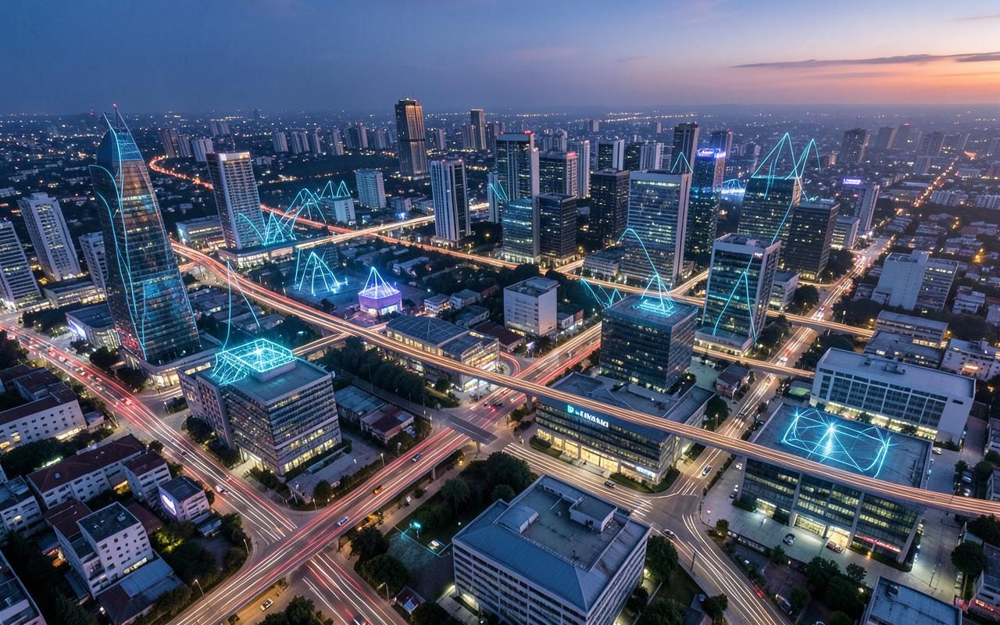
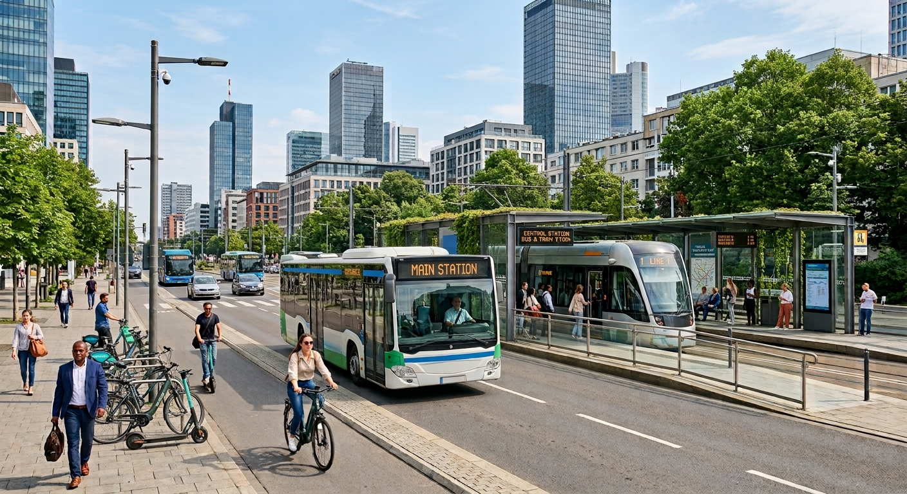

Smart Transport
We support mobility planning through transport data, traffic monitoring, and connected transport systems.
Build With Us.
Secure Your Future
UrbanSync Infrastructure Consultancy provides digital infrastructure solutions for smarter transport, energy monitoring, and urban services.



We support mobility planning through transport data, traffic monitoring, and connected transport systems.
We help organisations monitor energy usage and identify opportunities for greater efficiency.
We develop digital approaches that help improve access to connected urban and public services.
| Sector | Solutions | Outcome |
|---|---|---|
| Transport | Mobility Analytics | Better Mobility |
| Traffic Monitoring | ||
| Energy | Energy Monitoring | Greater Efficiency |
| Usage Analytics | ||
| Urban Services | Digital Platforms | Better Public Access |
| Service Management |
Connecting infrastructure, data, and digital systems to improve coordination.
Using monitoring and data analysis to improve resource management and performance.
Designing services around the needs of communities and the people who use them.
Connected mobility, energy intelligence, and urban technology are becoming increasingly important in modern cities.
Smart-city projects often involve councils, technology partners, consultants, and infrastructure organisations.
Our focus includes transport systems, energy monitoring, and digital urban services.
Work with transport and mobility data to support smarter urban planning and decision-making.
Salary: AUD6,000 – AUD8,500
Support clients in analysing energy use and improving digital monitoring of infrastructure.
Salary: AUD7,500 - AUD10,000
We acknowledge the Traditional Custodians of the lands on which we work and recognise the continuing connection of Aboriginal and Torres Strait Islander peoples to Country. We support inclusive participation in digital transformation and opportunities for Aboriginal and Torres Strait Islander peoples.